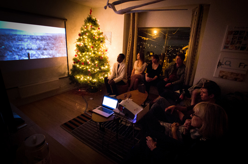

Time, Wasted
by Shaun Scott and Virginia Wilcox
Film screening and photography show: December 17, 2011

--------------------------------------------------------------------------------
NEPO Little Treats film screening and show: December 17, 2011
Time, Wasted
by Shaun Scott and Virginia Wilcox
Time, Wasted
Screening of Waste of Time, a documentary film by Shaun Scott,
accompanied by photographs by Virginia Wilcox.
Saturday December 17th 2011, 6-10pm
Opening at 6pm, the film screening starts at 8pm
$5 suggested donation
"Time, Wasted" is a collaborative presentation of cinema and still photography between filmmaker Shaun Scott ("Seat of Empire", "Waste of Time", "100% OFF: A Recession-Era Romance) and photographer Virginia Wilcox. Set at the intersection of "personal is political" this presentation examines the roles that media and technology play in our private and public lives.
Displayed in the front room will be the photography of Virginia Wilcox, whose new project, Mobile, comments on the impact of mobile technology and social media in today's society. Her work questions the emotional disconnect that results from information-dependency, showing subjects in trance, disconnected and absorbed by their mobile devices. Wilcox has shown work in New York, Los Angeles, Seattle, and Paris. Her work was selected by Aperture editor Denise Wolff for the juried exhibition Present Tense at Photographic Center Northwest in 2010.
Called "maddening and courageous" by The Stranger and "avant garde" by Seattle Weekly, Shaun Scott's second feature length film, "Waste of Time" (2010), reconstructs the biography of American consumer culture using a skillfully-edited mix of vintage advertisements, rich local music, and bold voice-over narration. The film explores United States' brief and improbable journey from pastoral expanse to industrial juggernaut to recession-prone wasteland.
The movie will be screened in full (starting at 8pm), followed by a Q&A session with both Scott and Wilcox.
--------------------------------------------------------------------------------